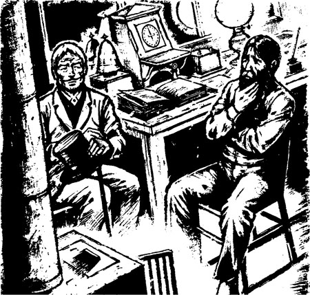
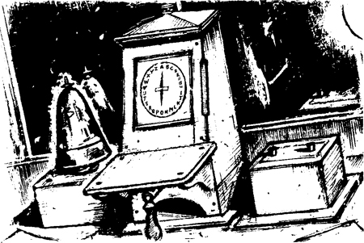
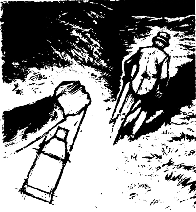

‘Mời anh ngồi xuống đây,’ người gác tàu nói.
Trong lò sưởi đang cháy, căn phòng nhỏ ấm áp vô cùng. Tôi nhìn quanh căn phòng. Có hai chiếc ghế và một cái bàn. Tôi ngồi xuống một chiếc ghế.

Trên bàn có một chiếc chuông điện. Còn có cả một cái máy điện tín nữa. Tôi rất thích máy điện tín. Máy điện tín đưa thông điệp đến và gửi thông điệp đi.
Máy điện tín có mặt giống như đồng hồ. Nhưng trên mặt đồng hồ có chữ chứ không phải số. Đồng hồ có hai kim đồng hồ, chúng chỉ vào các con số trên mặt đồng hồ. Ai đó có thể nhìn vào mặt đồng hồ và biết được thời gian. Nhưng trên máy điện tín chỉ có một kim đồng hồ. Kim đồng hồ này chỉ vào các chữ trên mặt đồng hồ. Ai đó có thể đọc các chữ đó. Các chữ sẽ tạo thành một thông điệp.
‘Anh cho tôi biết về chiếc chuông điện và máy điện tín của anh nhé,’ tôi nói với người đàn ông. ‘Ai gửi thông điệp cho anh, còn anh thì gửi thông điệp cho những ai?’
‘Trong trạm báo hiệu này, có những dây điện từ chuông điện và máy điện tín đi ra,’ người gác tàu trả lời. ‘Một số dây điện dẫn đến chuông điện và máy điện tín trong trạm báo hiệu ở bên kia đường hầm, còn một số dây điện thì dẫn đến trạm báo hiệu ở ga tiếp theo.’ Anh ấy chỉ theo hướng Dover.
‘Tôi có thể nhận được thông điệp từ cả hai trạm báo hiệu đó,’ anh ấy nói. ‘Và tôi cũng có thể gửi thông điệp đến họ. Tôi có thể gửi và nhận thông điệp từ chuông điện, cũng như có thể gửi và nhận thông điệp từ máy điện tín.’
‘Anh thường nhận được những thông điệp nào từ chuông điện?’ Tôi hỏi.
‘Chuông điện sẽ reo một lần,’ người gác tàu trả lời. ‘Điều đó có nghĩa là – CÓ THÔNG ĐIỆP DÀNH CHO ANH. Đôi khi tôi không ở ngoài trạm báo hiệu, tôi nghe thấy tiếng chuông điện nên vào bên trong, chờ tin nhắn. Các thông điệp từ chuông điện thì rất đơn giản.’
‘Đôi khi, chuông điện sẽ reo một lần rồi reo thêm hai lần nữa,’ người gác tàu nói. ‘Người gác tàu ở ga đang nói rằng – ĐÃ CÓ MỘT CHUYẾN TÀU ĐI LÊN. TÀU ĐÃ ĐI QUA TRẠM BÁO HIỆU CỦA TÔI, SẼ SỚM ĐẾN TRẠM BÁO HIỆU CỦA ANH. Lúc đó, tôi sẽ đưa một tín hiệu trên cột – tín hiệu màu trắng. Tín hiệu đó có nghĩa là – HÃY ĐI QUA ĐƯỜNG HẦM.’
‘Đôi khi, chuông điện reo một lần rồi reo thêm ba lần,’ anh ấy nói. ‘Người đàn ông bên kia trạm báo hiệu đang nói rằng – CÓ MỘT CHUYẾN TÀU ĐI XUỐNG, SỚM THÔI SẼ VÀO ĐƯỜNG HẦM, HÃY NGỪNG MỌI CHUYẾN TÀU KHÁC Ở TRẠM BÁO HIỆU CỦA ANH. Lúc đó, tôi sẽ đưa tín hiệu cảnh báo màu đỏ lên cột, tôi sẽ đặt cờ đỏ hoặc đèn đỏ lên cột. Anh có hiểu không?’
‘Vâng,’ tôi nói, ‘tôi hiểu rồi.’
‘Tôi cũng gửi thông điệp từ chuông điện nữa,’ người gác tàu nói. ‘Một chuyến tàu đi qua trạm báo hiệu của tôi, chạy về Dover. Tôi sẽ nhấn nút này.’
Anh ấy chỉ về một cái nút gần chuông điện.
‘Chuông điện ở trạm báo hiệu trong ga sẽ reo. Người đàn ông trong trạm sẽ chờ tin nhắn. Sau đó, tôi nhấn nút ba lần, để báo cho anh ta về chuyến tàu.’
‘Hoặc tôi nhấn nút này,’ người đàn ông nói. Anh ấy chỉ vào một nút khác.
‘Chuông điện reo ở trạm báo hiệu bên kia đường hầm. Tôi nhấn nút lần đầu rồi nhấn lần thứ hai. Điều đó báo cho người gác tàu trong trạm báo hiệu bên kia về chuyến tàu.’
‘Còn máy điện tín thì sao?’ Tôi nói, ‘Thông điệp điện tín thì thế nào?’
‘Tôi có thể gửi những thông điệp dài hơn qua chiếc máy đó,’ người gác tàu cho biết.
‘Tôi sẽ rung chuông điện một lần ở một trong các trạm báo hiệu, sau đó rung sáu lần nữa,’ anh ấy nói. ‘Người gác tàu ở đó sẽ chờ tin nhắn trên máy điện tín của anh ấy. Tôi di chuyển kim đồng hồ trên máy của tôi đến một chữ cái, rồi nhấn vào cần gạt này.’
Anh ấy chỉ cho tôi một chiếc cần gạt bên dưới mặt đồng hồ.
‘Kim đồng hồ bên trạm báo hiệu kia sẽ di chuyển đến cùng chữ cái, rồi tôi sẽ gửi chữ cái tiếp theo của thông điệp, rồi chữ tiếp theo nữa.’

‘Những người gác tàu khác cũng có thể gửi thông điệp cho tôi,’ người đàn ông nói. ‘Chuông điện ở đây sẽ reo một lần rồi lại reo tiếp sáu lần. Tôi sẽ xem máy điện tín của mình, ghi lại những chữ cái, sau đó tôi có thể đọc thông điệp.’
‘Anh có một công việc thú vị,’ tôi nói. ‘Nhưng có vẻ rất tối tăm và cô đơn ở đây, trong khu vực cắt này, anh thường lên đỉnh đồi không?’
Người gác tàu bắt đầu trả lời. ‘Chiếc chuông điện —’
Bỗng chuông điện trên bàn reo một tiếng. Chuông điện lại reo sáu lần. Người gác tàu viết tin nhắn vào một mảnh giấy – đó là tin nhắn từ máy điện tín. Anh ấy vội vàng gửi trả lời.
‘Tôi phải ở gần chuông điện,’ người gác tàu nói. ‘Tôi không đi xa khỏi trạm báo hiệu được.’
Chuông điện lại reo. Người gác tàu ngừng nói. Có tin nhắn khác đến và anh ấy trả lời.
‘Anh có thích công việc của mình không?’ Tôi hỏi, ‘Ở đây rất cô đơn.’
‘Với tôi thì công việc này ổn, thưa ông,’ anh ấy trả lời, ‘Nhiều năm trước, tôi đã từng là sinh viên —’
Người gác tàu ngừng nói, anh ấy nhìn về phía chuông điện. Nhưng chuông điện không reo! Anh ấy mở cửa ra và đi ra ngoài, hướng mắt theo đường ray về phía đèn đỏ, sau đó anh ấy đóng cửa và ngồi xuống. Đột nhiên, anh ấy lại vô cùng hoảng sợ.
‘Tôi đã từng là sinh viên,’ anh ấy lại nói. ‘Nhưng tôi là một sinh viên tồi, tôi không thể có một công việc quan trọng được —’
Anh ấy lại quay lại và nhìn vào chuông điện. Nhưng chuông vẫn không reo!
Người đàn ông tiếp tục nói.
‘Đến bây giờ thì tôi lại làm nghề này,’ anh ấy nói. ‘Tôi hoàn thành tốt công việc của mình, có khi làm cả ngày, có khi làm cả đêm. Ở đây thật yên tĩnh. Tôi vừa đọc sách vừa học nữa, tôi đã học được tiếng Pháp, còn học cả toán nữa.’
‘Anh là một người đàn ông vui vẻ!’ Tôi nói.
Nhưng anh ấy chẳng hề vui vẻ gì. Anh ấy vô cùng lo lắng. Tại sao anh ấy lại lo lắng và sợ hãi cơ chứ?
‘Tôi không vui đâu, thưa ông,’ anh ấy nói rất nhỏ nhẹ. ‘Hồi trước, tôi rất vui, giờ thì tôi lo lắng lắm.’
‘Tại sao anh lại lo lắng?’ Tôi hỏi.
‘Đã muộn rồi, thưa ông,’ người gác tàu trả lời. ‘Anh có đến thăm tôi nữa không? Chúng ta sẽ lại nói chuyện vào ngày khác.’
‘Được, tôi sẽ quay lại,’ tôi nói, ‘Tôi đang ở tại một khách sạn cách đây một dặm, tôi sẽ đến đây lúc nào?’
‘Ngày mai đến nhé, thưa ông,’ anh ấy trả lời, ‘Tôi bắt đầu làm việc lúc mười giờ tối.’
‘Tôi sẽ đến lúc mười một giờ,’ tôi nói. ‘Bây giờ tôi phải đi rồi.’ Tôi đứng dậy.
‘Cho tôi hỏi, thưa ông,’ người đàn ông nói. ‘Tại sao tối nay ông lại gọi ‘A lô, a lô!’?’
‘Tôi đang gọi ông,’ tôi trả lời, ‘Tôi muốn nói chuyện với ông.’
‘Ông có nghe thấy giọng nói không?’ Người gác tàu hỏi, ‘Có phải một giọng nói trong đầu ông đã nói vậy không?’
‘Không,’ tôi trả lời. ‘Tại sao ông lại hỏi thế?’
Anh ấy không trả lời tôi.
‘Chúc ông ngủ ngon, thưa ông,’ anh ấy nói. ‘Nhanh chóng đi đi, tôi sẽ mở đèn trắng cho ông xem đường. Xin đừng gọi tôi ngày mai nhé.’
